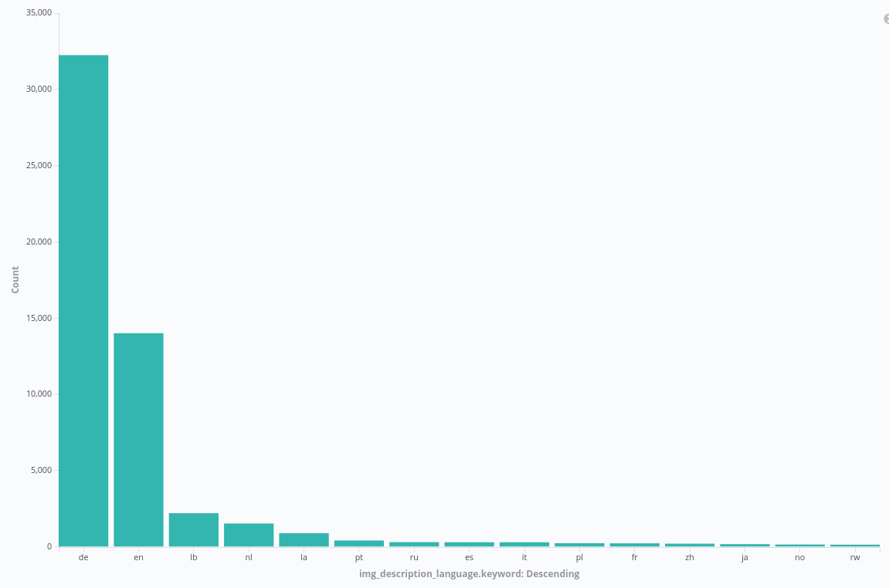

|
|

|
|
Introduction
We concluded an interesting interdisciplinary project on digitalization where we performed some basic data science (web scraping, elastic search/kibana juggling, counting). I would like to share some results on this blog.
The project was called "DIGITAL COMMUNICATION STRATEGIES FOR THE CULTURAL SECTOR IN THE BODENSEE REGION" and the data analysis module dealt with the question of how digitisation was actually implemented using the example of some cultural providers on Lake Constance.
Motivation
The presence in social media channels is an important indicator of the extent to which a cultural provider has gone digital. It shows the extent to which cultural providers are aware of their own image on the Internet and how they actively deal with it. A popular platform is Instagram. It is easier to access data from there than from Facebook or Twitter, for example, which is a great advantage. Also data privacy is less concerning here since people know that it will be shared. We also gathered data which was only available without access restriction and will not share it. We use in this article interchangeably Lake of Constance region and Bodensee region.
Instagram is a social network service specialized in images. The exchange takes place via so-called posts, which always consist of a picture and a description. Users can leave comments on each post. Every day, 500 million users visit the platform, a total of 1 billion per month. In Germany Instagram is widely used with 22 million users and we assume that this is also the case in the Bodensee region. Instagram focuses on images. This limits the possibilities of user posts, because some cultural providers do not allow to take pictures of the exhibitions/performances. On the other hand, the public relations work of the cultural provider and the experience of the visitors up to and after the exhibition/performance can be well documented. Therefore, we expect that all selected cultural providers are well represented.
Collected data
First, a list of 210 cultural destinations and places, as well as 48 artists and 102 events relevant to the Lake Constance region was compiled. Then we implemented a software routine to search for and download relevant Instagram posts and the corresponding comments from this list. The downloaded data was then stored in a database. Thus, by the end of July 2019, a total of approximately 300,000 posts had been collected.
Analysis
We noticed that many of the posts were noise: For example, a restaurant in Porto Alegre - Brazil - is called "Mainau", so some posts contain relevant text but are not directly related to the Lake Constance region. Also Mainau is only conditionally a cultural provider but much more touristic (in total 41.246 posts were connected to Mainau). Therefore, we removed many such terms or refined the search with an additional local attribute, so that in the end 128,188 posts were used for analysis. Nevertheless, we kept one very large event, namely #bodensee, so that we can make a comparison with the Bodensee region as a whole. In the analysis, we summarize all searched terms of the list and only speak of events, if not explicitly subdivided.



Conclusion
Checkout our project in : Digital Transformation in the Cultural and Creative Industries
<script type="text/javascript">
var gaJsHost = (("https:" == document.location.protocol) ? "https://ssl." : "http://www.");
document.write(unescape("%3Cscript src='" + gaJsHost + "google-analytics.com/ga.js' type='text/javascript'%3E%3C/script%3E"));
</script>
<script type="text/javascript">
try {
var pageTracker = _gat._getTracker("UA-151378545-1");
pageTracker._trackPageview();
} catch(err) {}</script>